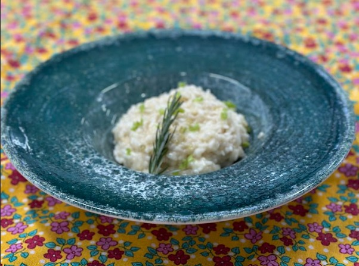

.....
Risoto de Pimenta de Cheiro
Como fazer o seu Risoto de Pimenta de Cheiro?
O Risoto de Pimenta de Cheiro é uma variação saborosa e aromática do clássico risoto italiano. A pimenta de cheiro, com seu perfume característico, adiciona um toque especial a essa receita, tornando-a uma opção única e deliciosa.
Ingredientes
Para o Branqueamento da Couve-flor:
O Risoto de Pimenta de Cheiro é uma escolha perfeita para impressionar em jantares especiais, comemorações ou simplesmente para saborear uma refeição gourmet em casa
Modo de Preparo
-
Branqueamento da Couve-flor
Limpe e retire as sementes e os filamentos brancos internos de todas as pimentas.
Passo 1
-
Corte as pimentas
Corte as pimentas em pequenos cubos.
Passo 2
-
Preparativos
Ferva as pimentas por 1 minuto, descarte a água e reserve as pimentas.
Passo 3
-
Caldo de legumes
Refogue metade da cebola na manteiga, acrescente o arroz e continue refogando.
Passo 4
-
Adicione o vinho
Adicione o vinho e, a partir desse momento, mexa continuamente o risoto.
Passo 5
-
Até o ponto ideal
Quando o vinho evaporar, adicione aos poucos o caldo de legumes e as pimentas.
Passo 6
-
Mexa bastante
Continue mexendo até atingir o ponto desejado.
Passo 7
-
Acrescente o Parmesão
Ao final, acrescente o queijo parmesão.
Passo 8
Passo a passo
Passo 1
Limpe e retire as sementes e os filamentos brancos internos de todas as pimentas.
Passo 2
Corte as pimentas em pequenos cubos.
Passo 3
Ferva as pimentas por 1 minuto, descarte a água e reserve as pimentas.
Passo 4
Refogue metade da cebola na manteiga, acrescente o arroz e continue refogando.
Passo 5
Adicione o vinho e, a partir desse momento, mexa continuamente o risoto.
Passo 6
Quando o vinho evaporar, adicione aos poucos o caldo de legumes e as pimentas.
Passo 7
Continue mexendo até atingir o ponto desejado.
Passo 8
Ao final, acrescente o queijo parmesão.